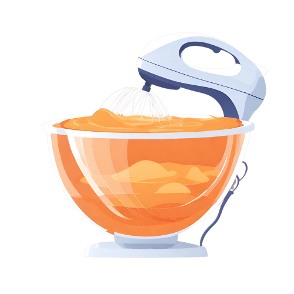
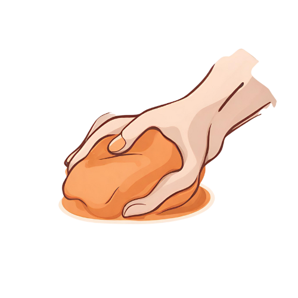
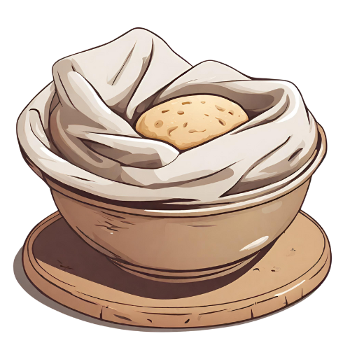
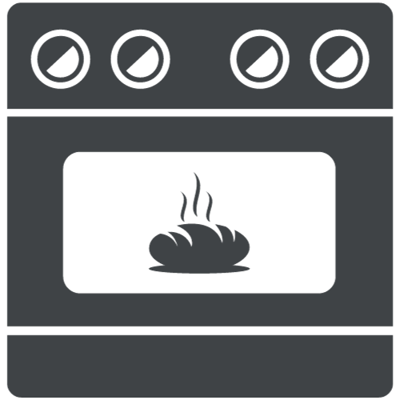
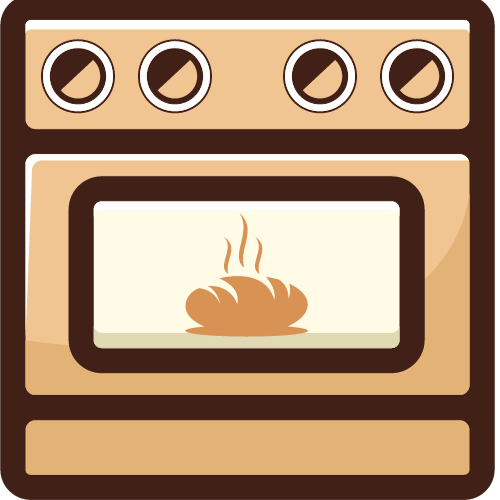

Preparación
1
Mezcla los ingredientes secos y añade la levadura y la cerveza
2
Amasa durante cinco minutos echa harina si la masa se pega mucho
Reposar
3
Repite el paso dos, tres veces mas
Amasar
Reposar
4
Enharina la masa y deja reposar en un bol tapado con un trapo 2-3h. Debe doblar su tamaño
5
Precalienta el horno a 250°C
Coloca la masa sobre papel vegetal en la bandeja o rejilla y haz unos cortes arriba
6
Pon una segunda bandeja mas abajo y coloca un molde con agua
7
Cocina 10 minutos a 250°C. Reduce la temperatura a 200°C y deja 30 min
8
Sacalo del horno y deja que se enfrie. Disfrutalo